2ndB Companion Sprite Pack v2
세컨비 v2에 이어 적용할 모모, 루루, 아치, 벨라, 가디 상태별 SVG 자산입니다. 모바일 메인에서는 이벤트 피드백으로 짧게 등장시키는 것을 기준으로 설계했습니다.
모모 Momo
기록 관리자
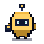
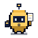
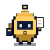
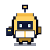
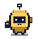
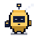
루루 Lulu
수집 드론
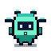
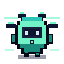
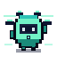
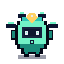
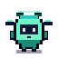
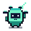
아치 Archi
연결 설계자
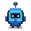
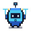
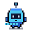
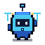
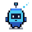
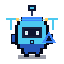
벨라 Vela
공상 확장자
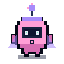
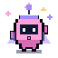
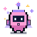
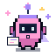
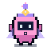
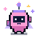
가디 Gadi
안전 관리자
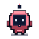
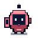
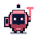
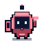
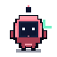
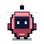
Event Cues short feedback
저장, 수집, 연결, 공상, 안전 안내
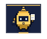
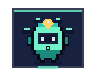
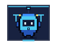
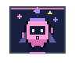
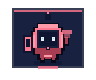